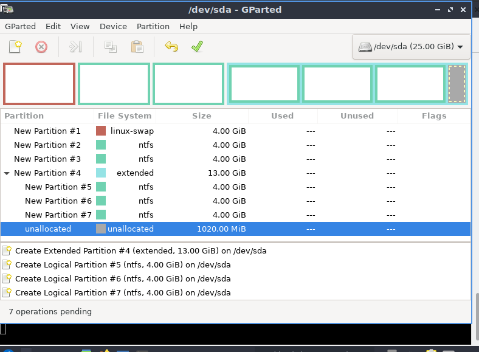

En esta práctica crearemos una máquina virtual de Lubuntu 20.04/22.04 LTS Desktop para entregar la práctica tendrás que rellenar la información solicitada y realizar los pasos adecuados
El objetivo de esta memoria es documentar todo el proceso de instalación de Lubuntu.
1. Los requisitos hardware mínimo y óptimo para poder realizar la instalación de la versión de Lubuntu Desktop 20.04 o 22.04.
Requisitos mínimos:
2. Prepara una MV con las siguientes características:

3. Ejecuta la máquina virtual y entra a probar Lubuntu (NO ejecutas la instalación directamente). Cómo puedes ver en el ordenador arranca una versión del sistema operativo configurada para que el usuario pruebe su funcionamiento, además te permite realizar determinadas operaciones de mantenimiento-configuración y conexión a internet. Busca la aplicación GParted y ejecútala (sino aparece realiza la instalación mediante “$sudo apt-get install gparted ”). Realiza la siguientes operaciones con los discos duros vacíos de la máquina virtual:
Si, es necesario crear otra tabla de partición GPT en el otro disco. Porque la primera tabla GPT fue creada en el disco sda, por tanto para que el disco sdb tenga una tabla GPT es necesario crearla. Además de que la práctica nos solicita que cada tabla GPT tenga características distintas, y que una de ellas tenga EFI.
La tabla de partición msdos es una tabla MBR. Utilizados en sistemas que no eran/son 64 bits.
Si, actualmente se pueden utilizar tanto GPT como msdos. Porque los sistemas de 64 bits admiten tanto GPT como MBR.


4. Desde el escritorio de Lubuntu arranca la instalación del sistema operativo para instalarlo en el HDD de tu MV, elige el idioma Castellano o Valenciano, configura el teclado seleccionando el idioma, elige el tipo de instalación mínima sin que se actualice (sino puede tardar más de una hora la instalación). Cuando te pida realizar la operación de elegir un disco duro donde instalar el Sistema Operativo realiza la configuración de modo manual
La partición, con el punto de montaje /home, es el destino de todos los archivos que descarguemos y personales (estudios, pasatiempos, de configuración o preferencias a la hora de utilizar aplicaciones).
La partición con el systema de ficheros swap tiene dos funciones: Para cuando la RAM esté saturada, se utilizará el espacio asignado de esta partición para “descongestionar” la saturada RAM. Y la segunda función es, para cuando apretemos los botones “hibernar” o “suspender”, se volcará toda la información de nuestra sesión activa en esta partición. Es por esta función la razón por la cual es apropiado que tenga una capacidad equivalente a la de la RAM, como mínimo.
Un sistema de archivos swap emula, virtualmente, la memoria RAM. Por tanto, y estando hablando del sdb, que contiene una tabla de particiones MBR, es importante que el archivo swap tenga una capacidad igual o muy parecida a la RAM, porque utiliza un sistema de paginación para gestionar la memoria virtual.


5. Continua la instalación del sistema operativo indicándole la franja horaria adecuada, añade el nombre del usuario (alumnado), nombre del equipo (aula_pc) p.e. info2-01, contraseña (1234), seleccionar que pida contraseña al iniciar sesión y termina de realizar la instalación.

6.Desde el menú aplicaciones busca la aplicación GParted y ejecútala (sino está la instala) y comprueba cómo están creadas las particiones. Desde PCManFT-Qt (Nautilus en Ubuntu), es decir, el explorador de archivos, intenta entrar en la partición NTFS que has creado.


7. Investiga en internet cuales son los comandos para montar/desmontar una partición o un pendrive en Linux para poder acceder a los archivos de esa partición.
El comando para montar particiones sería "mount", y para desmontar "umount. En sistema de Lliurex más recientes, también se utiliza el "udisksctl".
En el disco sdb creé la tabla de partición en msdos, en vez de GPT. Esto es debido a que la condición de la capacidad de cada partición tenían que ser la misma, y un número de 6 particiones. Al leer estas características pensé en hacerlo con msdos (MBR), ya que las particiones de la tabla MBR tienen el mismo tamaño. y respecto al número de particiones (6), hice 3 particiones primarias, y 1 extendida, la cual tendría 3 particiones lógicas.
Como conclusión, esta práctica me ha ayudado a entender mucho mejor la importancia de los tipos de archivo en sus correspondientes particiones. Además de la importancia de la capacidad de cada partición según su función y el tipo de archivo que tienen asignado.